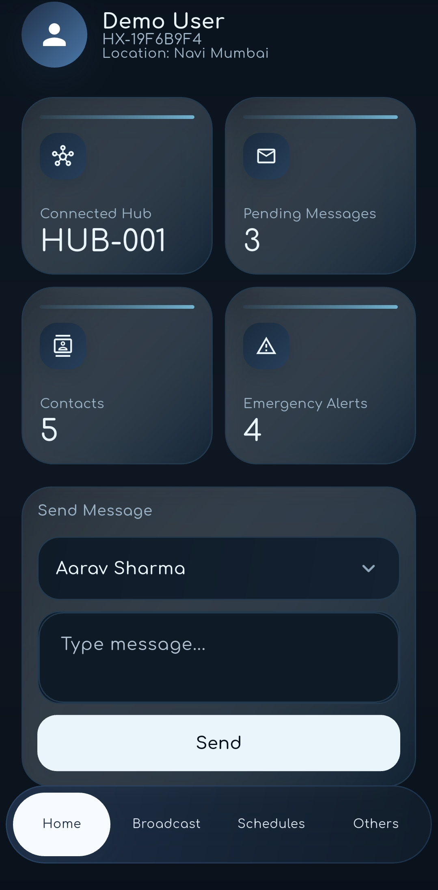

Decentralized communication beyond infrastructure. XENECOSYS keeps people connected with offline-first messaging, local hubs, encrypted bundles, and delay-tolerant networking.

Offline-first mobile messaging app for local sync, emergency alerts, and hub discovery.
Desktop/admin hub for queues, bundles, users, and DTN coordination.
Physical transport layer for encrypted bundles between hubs.
Adaptive routing layer for choosing the best delivery path.